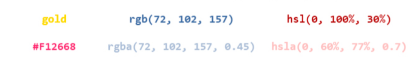

Ми можемо встановлювати колір для тексту, використовуючи різні значення:
Ця властивість може приймати як однорідний колір так і прозорість, але на відміну від зображень не може бути градієнтом.
Ти також можеш задати прозорість окремо, за допомогою властивості opacity.
Значення властивості color можуть успадковувати й інші css властивості, як наприклад:
- кордони (якщо колір не був для них заданий окремо за допомогою властивості border-color).
- маркери списків (при умові, що вигляд маркера не було змінено за допомогою властивості list-style-image, тоді властивість color не спрацює, бо маркер буде зображенням, а color застосовується тільки до тексту).
Порада:
Використовуйте background-color і color, щоб встановити колір тла та тексту, це допоможе зробити текст легшим для читання.
Нотатка:
Дія цієї властивості не поширюється на посилання.
Властивість color може отримувати 6 значень:
- color: - Колір тексту.
- initial: - Встановлює властивість у значення без задання.
- inherit: - Вказує на спадковість властивості від свого батьківського елемента.
- currentColor: - Теж саме, що inherit.
- transparent: - Робить текст прозорим (невидимим).
- unset: - Комбінація ключових слів initial і inherit. Встановлює значення властивості як inherit, якщо властивість успадковується від свого батька, в іншому випадку значення встановлюється як initial.
Загальні атрибути
В HTML є кілька атрибутів, які є загальними для всіх елементів, такі атрибути звуться загальними, ґлобальними чи універсальними.
Ці атрибути можуть використовуватися з усіма тегами, хоча на деякі з них вони можуть ніяк не впливати.
Всі зазначені нижче атрибути є загальними і можуть бути вказані до будь-якого HTML елемента
- title Вказує додаткову текстову підказку
- class Визначає один або кілька класів, щоб зв’язати елемент з таблицею стилів (CSS).
- id Задає унікальний ідентифікатор для елемента.
- style Задає вбудований (inline) CSS стиль для елемента.
- tabindex Встановлює порядок отримання фокусу при переході між елементами за допомогою клавіші `Tab`.
Докладніше по кожному атрибуту:
Загальний html атрибут class
Атрибут class задає стильовий клас, який дозволяє зв'язати певний тег зі стильовим оформленням.
Атрибут class, в основному, використовується для вказівки на клас в каскадній таблиці стилів (CSS). Тим не менш, він також може бути використаний в JavaScript (через HTML DOM), щоб внести зміни в HTML елемент з зазначеним класом.
Нотатки:
При вказівці імені класу враховується регістр символів. Відтак «classname» і «ClassName» два різних ідентифікатора.
Атрибут class дозволяє одночасно задавати кілька імен класу, розділяючи їх знаком пригалини. Це дозволяє застосувати кілька CSS класів для одного HTML елемента.
У HTML4 імена класів можуть містити в собі латинські букви (A-Z, a-z), цифри (0-9), символ дефіса (-) і підкреслення (_) і не повинні починатися з цифри. Використання кирилиці в класах неприпустимо. У HTML5 ці обмеження зняті, але для сумісності зі старими браузерами і JavaScript рекомендується дотримуватися цих правил.
Синтакс
- classname:
Задає один або кілька імен класів для елемента.
- Правила іменування:
- Назва класу повинна починатися з літери A-Z або a-z
- Назва класу може містити: літери (A-Z, a-Z), цифри (0-9), дефісів ("-") та підкреслення ("_")
- В HTML, всі значення чутливі до регістру
- Правила іменування:
Загальний html атрибут title
Опис та застосування
Додає підказку з текстом, яка з'являється при наведенні курсору на елемент. Вид такої підказки залежить від браузера, налаштувань операційної системи і не може бути змінений безпосередньо за допомогою HTML-коду або стилів.
Синтакс
Загальний html атрибут style
Опис та застосування
Глобальний атрибут style задає вбудований (inline) CSS стиль для елемента. Допускається використання декількох властивостей і значень, які необхідно розділяти між собою крапкою з комою.
Синтакс
Атрибут style може отримувати єдине значення :
style: Як значення вказуються стильові правила: спочатку слід ім'я стильової властивості, потім через двокрапку його значення. Стильові властивості поділяються між собою крапкою з комою.
Загальний html атрибут tabindex
Опис та застосування
Атрибут tabindex встановлює порядок отримання фокусу при переході між елементами за допомогою клавіші Tab. Перехід відбувається від меншого значення до більшого, наприклад від 1 до 2, потім до 3 і так далі. При цьому сувора послідовність не важлива, допускається пропускати якісь числа і починати з будь-цифри. Якщо значення tabindex у елементів збігаються, тоді враховується їх порядок появи в коді. Заблоковані елементи (у яких встановлено атрибут disabled) не беруть участі в переході і фокус не отримують. Порада: Максимальне значення не повинно перевищувати 32767.
Синтакс
Атрибут tabindex не має жодного значення :
Загальний html атрибут id
Опис та застосування
- Використовуйте тільки літери алфавіту (A-Z, a-z), числа, дефіси, знаки підкреслення.
- Ідентифікатор не повинен містити будь-яких пропусків.
- Ідентифікатор на сторінці використовується тільки до одного елементу.
- Ідентифікатори чутливі до регістру (#css-in-ua і #Css-In-UA різні ідентифікатори).
Синтакс
Атрибут id не має жодного значення :